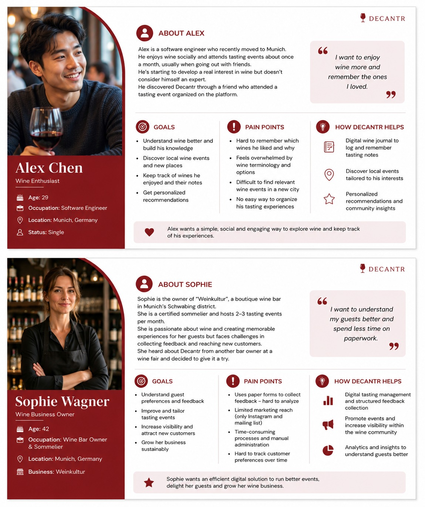
| Mockup | Description |
|---|---|
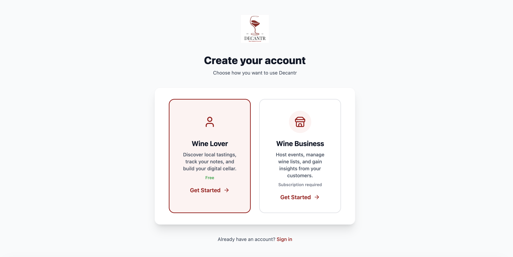 |
Alex opens the Decantr website and clicks "Sign up." On the registration page, he selects "Wine Lover" (free). He is taken to a form to fill in his personal details. |
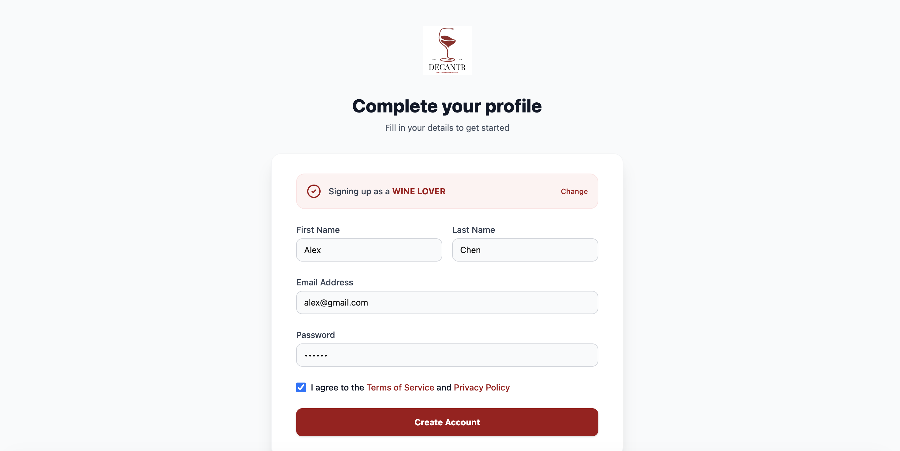 |
He enters his first name, last name, email, and password. After agreeing to the terms of service, he clicks "Create Account" and is immediately directed to the Explore page. |
/api/auth/register — Creates User with role "taster". Returns JWT token. Database: Create User document.| Mockup | Description |
|---|---|
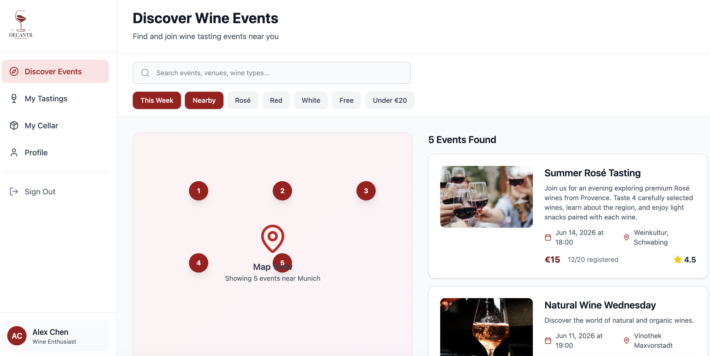 |
The Explore page shows Alex an interactive map with pins marking nearby tasting events, alongside a scrollable list of upcoming events. He applies filters for "This Week" and "Nearby." He spots "Summer Rosé Tasting" at Weinkultur — €15, 12/20 registered, 4.5 stars. |
/api/events?status=published&location=munich — Returns published events filtered by location and date. Database: Read Events, Registrations (count per event).| Mockup | Description |
|---|---|
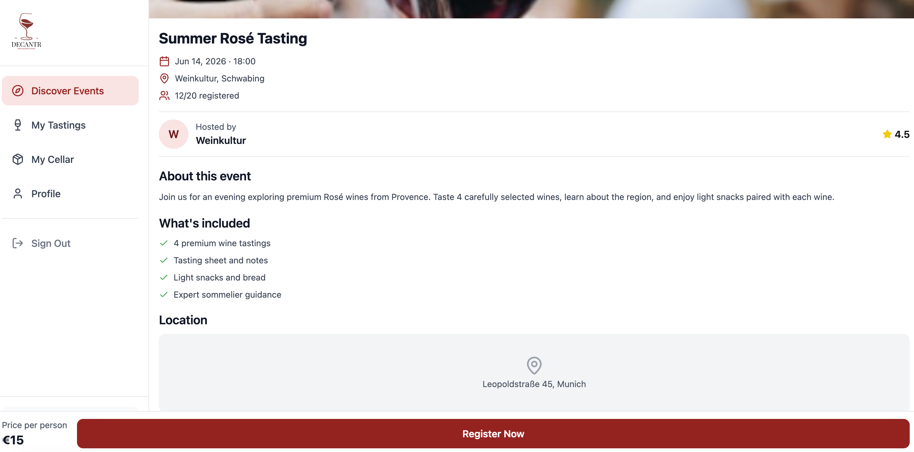 |
Alex taps the event card and views the full details page: a cover image, event description promising four carefully selected Rosé wines from Provence, what's included (tastings, notes, snacks, sommelier guidance), host info ("Weinkultur" ⭐ 4.7), a location map, and €15 per person with a "Register Now" button. |
/api/events/:id — Returns full event data including host business info and wine list. Database: Read Event, Business, Wine documents.| Mockup | Description |
|---|---|
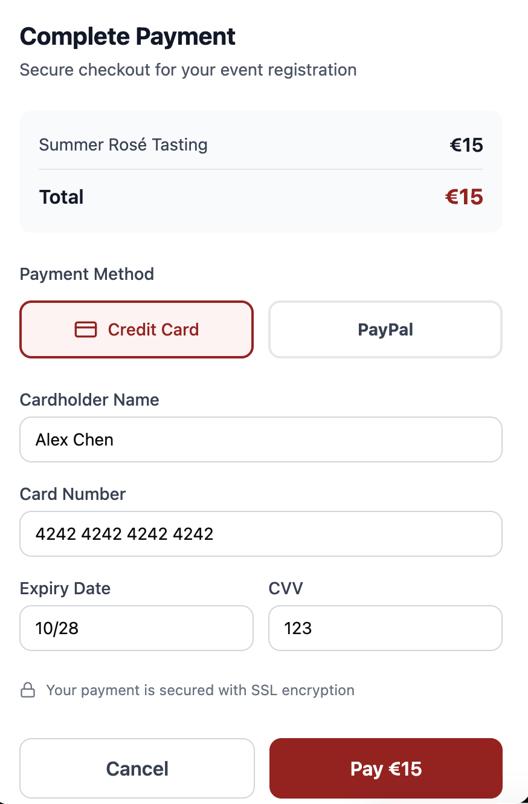 |
Alex clicks "Register Now" and a payment modal appears. He sees an order summary (Summer Rosé Tasting — €15), selects "Credit Card" as payment method, and enters his card details: cardholder name, card number, expiry date, and CVV. A lock icon confirms SSL encryption. |
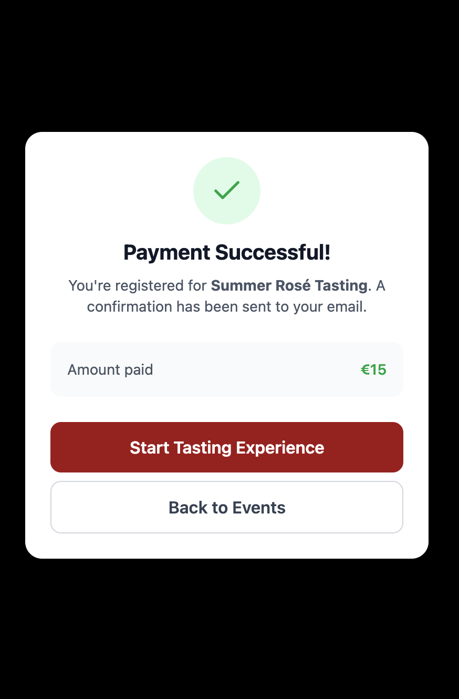 |
After a brief "Processing..." animation, a green checkmark confirms "Payment Successful!" The modal shows the amount paid (€15) and gives him two options: "Start Tasting Experience" or "Back to Events." The event now appears in his My Tastings section. |
/api/registrations — Creates Registration document. Integrates with Stripe for payment processing. Database: Create Registration (paymentStatus: completed, paymentMethod: credit_card, amountPaid: 15).| Mockup | Description |
|---|---|
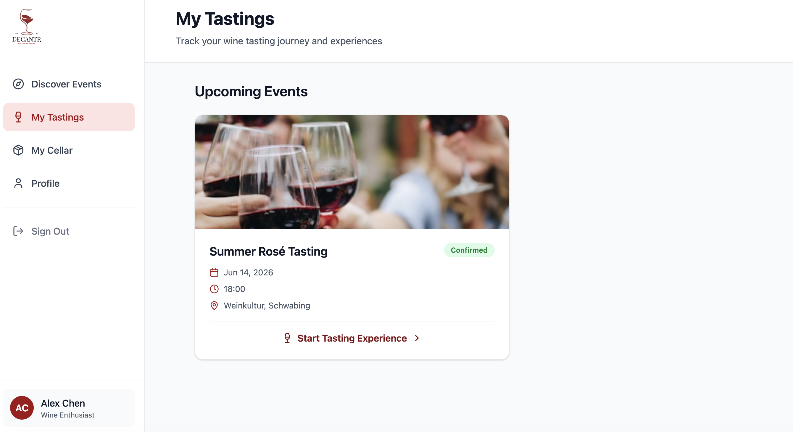 |
On the evening of the event, Alex arrives at Weinkultur and opens the tasting interface. The screen shows the event name, a list of wines to taste, and a progress indicator. He begins his tasting journey through 4 wines. |
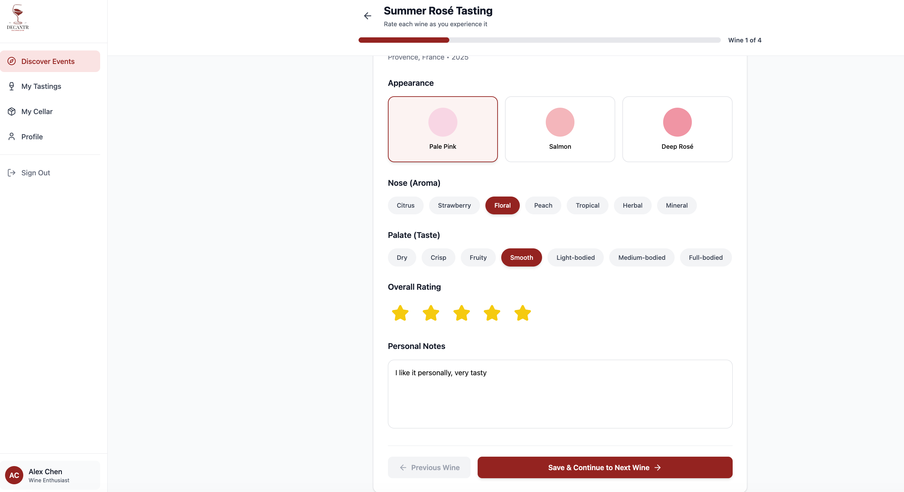 |
For each wine, Alex records his impressions using a structured form: appearance (color swatch selection), nose/aroma (selectable flavor tags like Citrus, Strawberry, Floral), palate (Dry, Crisp, Light-bodied), overall star rating (1-5), and personal notes. He clicks "Save & Next Wine" to proceed. |
/api/tasting-notes — Creates a TastingNote document for each wine, linked to user, event, and wine. Database: Create TastingNote documents (one per wine per user).| Mockup | Description |
|---|---|
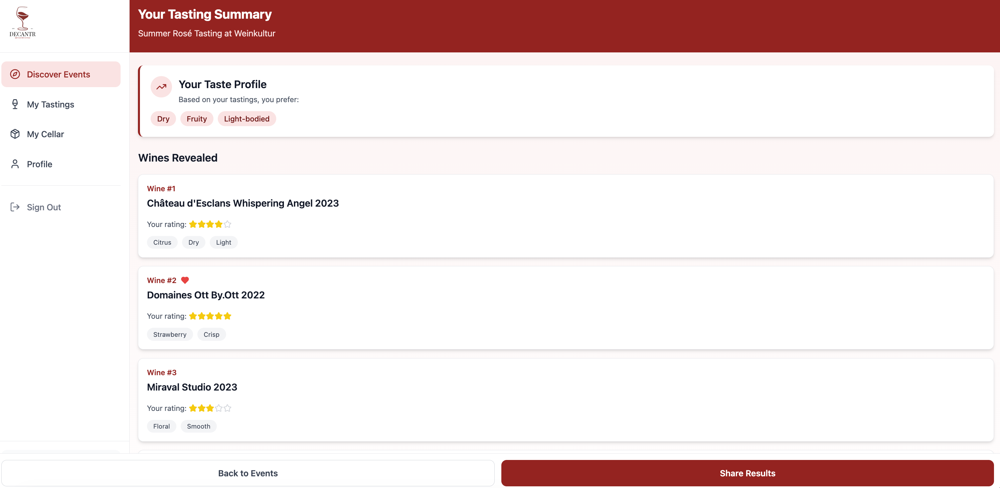 |
After completing all tastings, Alex receives his personal summary. The wines are revealed with their actual names alongside his ratings and flavor tags. A taste profile insight tells him: "Based on your tastings, you prefer Dry, Fruity, Light-bodied wines." A banner prompts him to save his favorites to his wine cellar. |
/api/users/:id/tasting-summary?eventId=... — Retrieves tasting notes, reveals wine names, computes taste profile. Database: Read TastingNotes (by user + event), Wines (names revealed).| Mockup | Description |
|---|---|
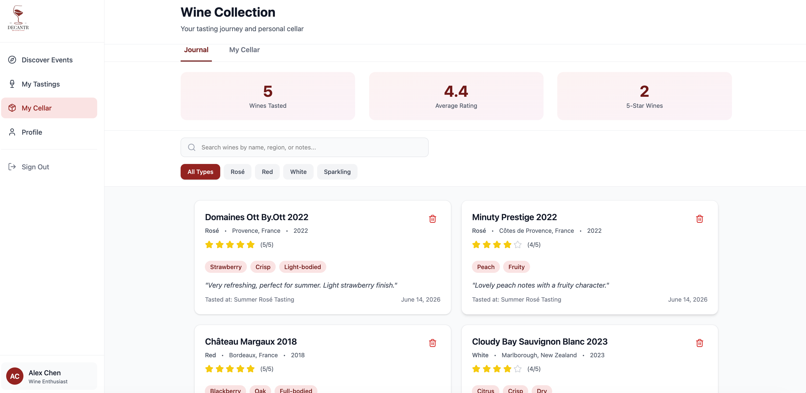 |
Later that week, Alex opens "My Cellar" and navigates to the "Journal" tab. He sees all wines he's tasted, complete with his ratings, flavor tags, personal notes, and the event where he tasted them. Statistics at the top show total wines tasted (5), average rating (4.4), and 5-star wines (2). |
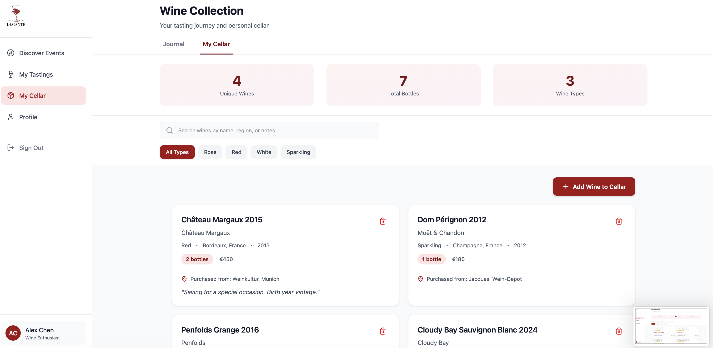 |
In the "My Cellar" tab, Alex can view wines he's purchased or saved — with producer info, bottle count, purchase location, and price. This becomes his personal wine collection tracker, growing with each event he attends. |
/api/cellar — Creates CellarEntry documents. GET /api/users/:id/cellar — Retrieves all entries. Database: Create CellarEntry documents. Read CellarEntries + Wines + TastingNotes.| Mockup | Description |
|---|---|
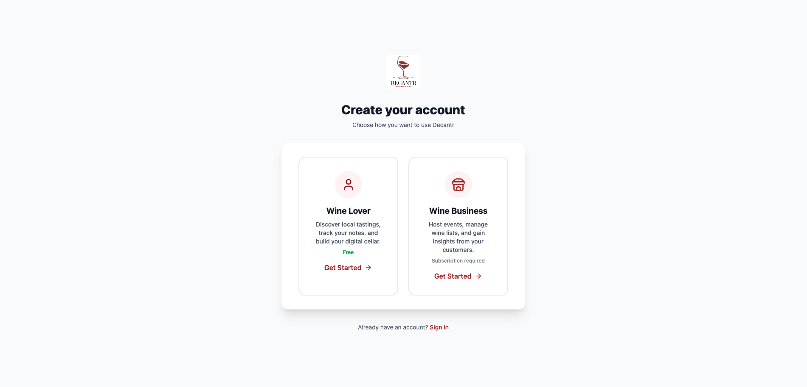 |
Sophie navigates to the Decantr website and clicks "Sign up." On the registration page, she is presented with two clear options: "Wine Lover" (free) and "Wine Business" (subscription required). She selects "Wine Business," which takes her to the next step. |
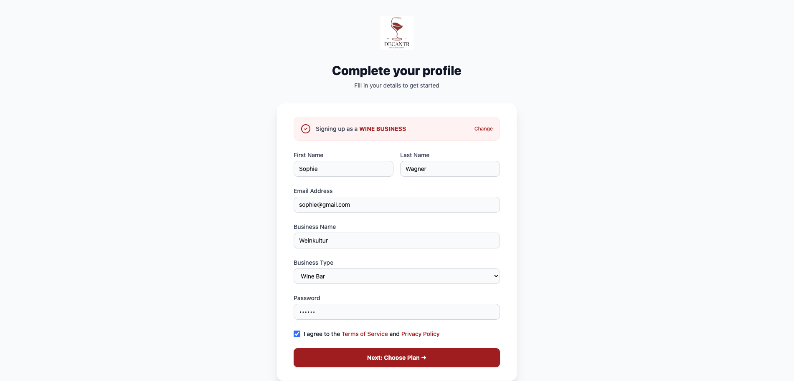 |
She fills in her personal details — first name, last name, and email — along with her business information: "Weinkultur" as the business name and "Wine Bar" as the business type. After setting a password and agreeing to the terms of service, she clicks "Next: Choose Plan →." |
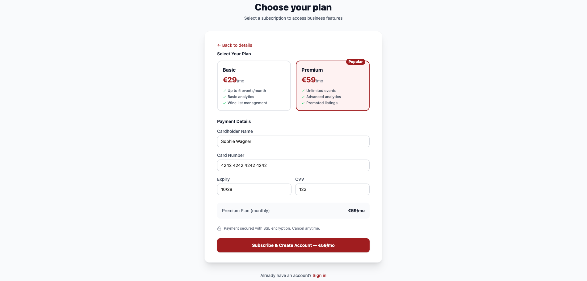 |
Sophie is presented with two subscription plans: Basic (€29/mo) and Premium (€59/mo). She selects the Premium plan for unlimited events and advanced analytics. She enters her credit card details and clicks "Subscribe & Create Account." After payment processing, she is directed to her business dashboard. |
/api/auth/register — Creates User + Business + Subscription documents. Payment processed via Stripe API. Database: Create User, Business, Subscription documents.| Mockup | Description |
|---|---|
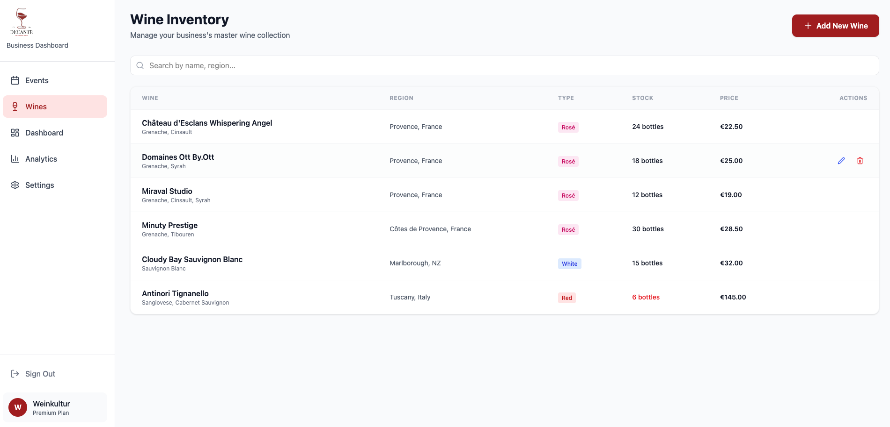 |
Before creating events, Sophie first builds her wine inventory. She navigates to the "Wines" section in the sidebar and sees her existing collection displayed in a table: wine name (with grape variety), region, type (color-coded badges), stock count, and price. She can search and filter wines. |
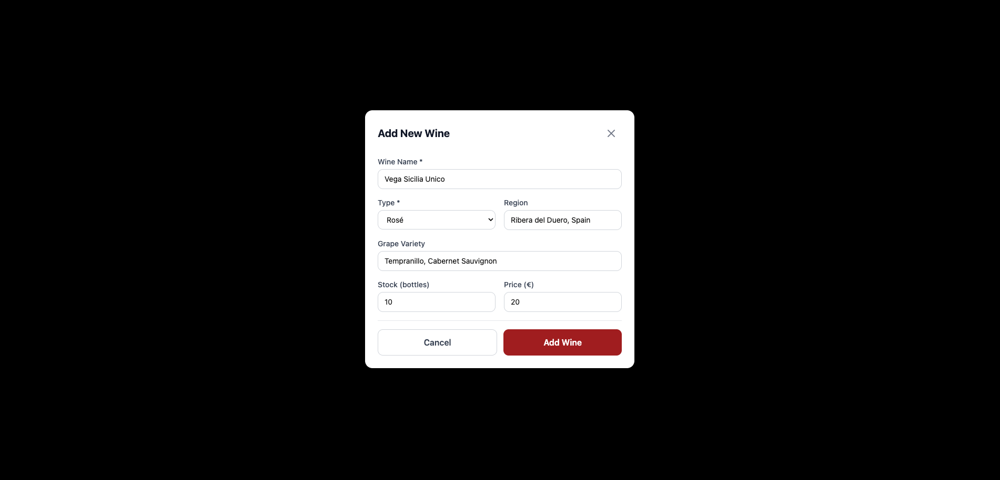 |
Sophie clicks "Add New Wine" to expand her collection. A modal appears where she enters the wine name, type, region, grape variety, stock quantity, and price. She can also edit existing wines or delete ones she no longer carries. This demonstrates full CRUD functionality on her wine inventory. |
/api/wines (Create), GET /api/business/:id/wines (Read), PUT /api/wines/:id (Update), DELETE /api/wines/:id (Delete). Database: Full CRUD on Wine documents.| Mockup | Description |
|---|---|
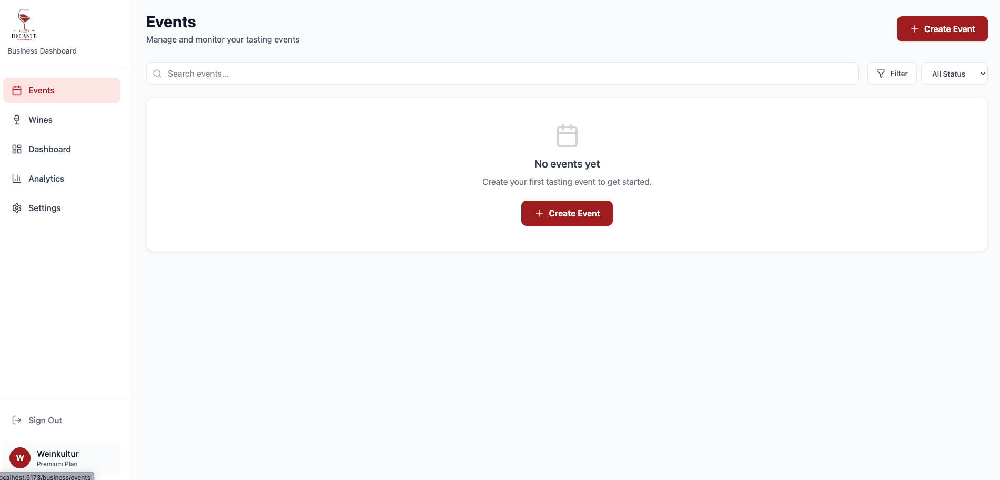 |
Sophie navigates to the "Events" section. She sees her list of past and upcoming events with status badges (Published, Draft, Completed), registration progress bars, and revenue for each. She clicks "Create Event" to start a new one. |
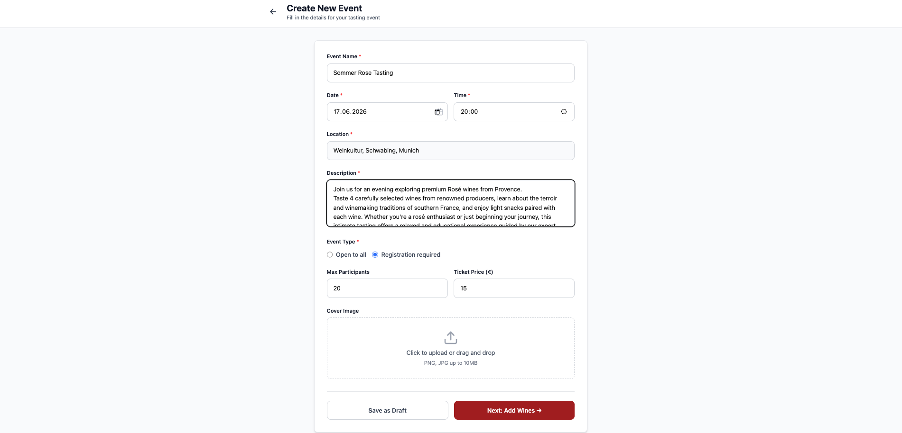 |
Sophie fills out the event creation form: event name ("Summer Rosé Tasting"), date (June 14, 2026), time (18:00), location (pre-filled with her bar address), description, event type ("Registration required"), max participants (20), and ticket price (€15). She clicks "Next: Add Wines →." |
/api/events — Creates Event document with status "draft". Database: Create Event document.| Mockup | Description |
|---|---|
| On the wine list management page, Sophie adds wines from her inventory to the tasting event. She sees the current wine list in a table format showing order number, wine name, type, region, and vintage with Edit and Delete action buttons. | |
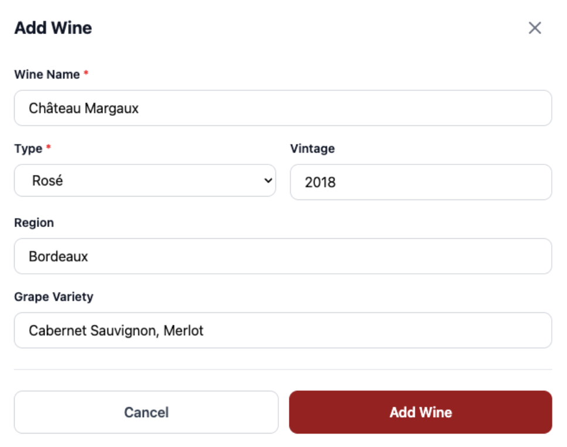 |
Sophie uses the "Add Wine" button to open a modal form. She enters the wine name, selects the type (Rosé/Red/White/Sparkling), vintage year, region, and grape variety. Each wine is added to the event's tasting order. |
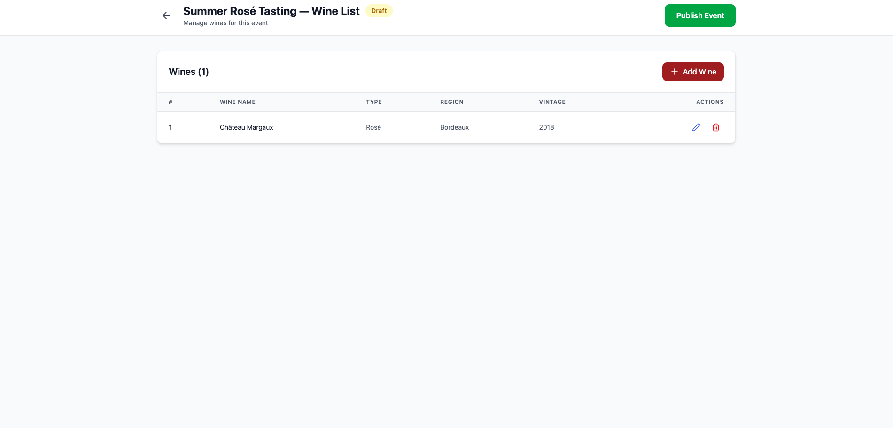 |
She notices an incorrect vintage on one wine and uses the edit button to correct it. She also removes a wine that is no longer available. The table updates in real-time, demonstrating Create, Read, Update, and Delete operations on the event's wine list. |
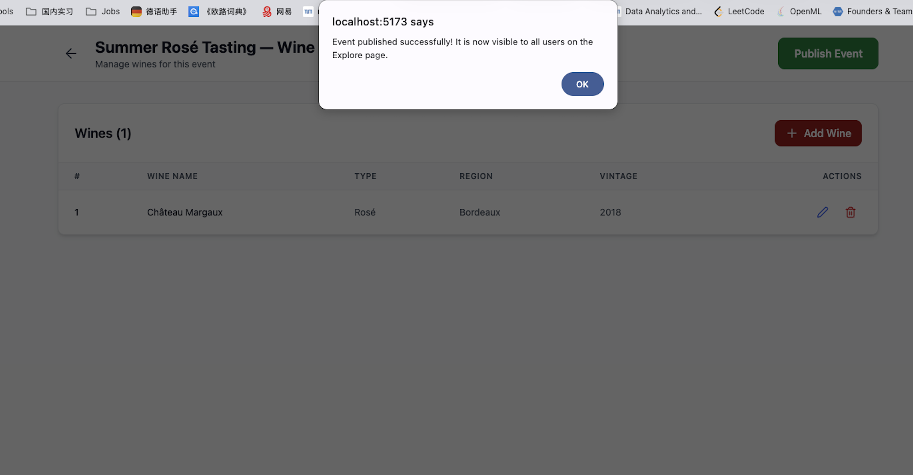 |
Satisfied with her selection, Sophie clicks the green "Publish Event" button. The event status changes from "Draft" to "Published" and becomes immediately visible to all wine enthusiasts on the Explore page. |
/api/events/:id/wines (Create), PUT /api/wines/:id (Update), DELETE /api/wines/:id (Delete), PUT /api/events/:id (Update status to "published"). Database: Full CRUD on event Wine documents.| Mockup | Description |
|---|---|
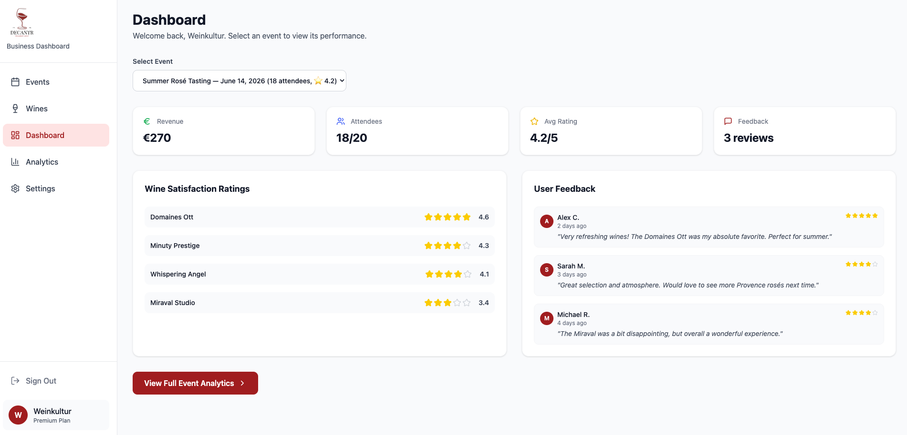 |
After the event concludes, Sophie returns to her Dashboard. She selects "Summer Rosé Tasting" from the event dropdown to view its performance. She sees key metrics (revenue €270, 18/20 attendees, avg rating 4.2/5), wine satisfaction ratings displayed as star ratings sorted from highest to lowest, and real user feedback with text comments and individual star ratings. |
/api/events/:id/analytics — Aggregates TastingNotes: average ratings per wine, user comments. Database: Read TastingNotes (aggregated), Registrations.| Mockup | Description |
|---|---|
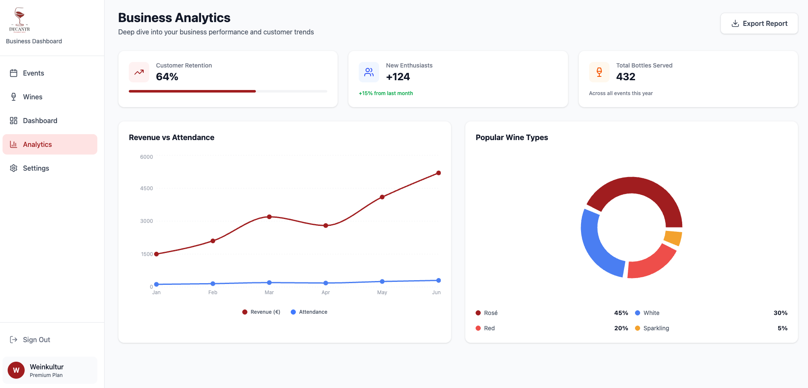 |
Sophie navigates to the "Analytics" section for a holistic view across all her events. She sees customer retention (64%), new enthusiasts gained (+124), total bottles served (432), a Revenue vs Attendance trend chart over 6 months, and a Popular Wine Types pie chart showing the distribution of preferences (Rosé 45%, White 30%, Red 20%, Sparkling 5%). |
/api/business/:id/analytics — Cross-event aggregation of revenue, attendance, wine type preferences. Database: Read Events, TastingNotes, Registrations (historical aggregation).[INSERT UML CLASS DIAGRAM HERE — 1 full page]
This UML class diagram represents Decantr's conceptual data model. The central class is User, specialized into Wine Enthusiast (B2C) and Business (B2B).
Business → owns Business entity → creates Events → features Wines Wine Enthusiast → creates Registrations (with payment) → records TastingNotes → saves CellarEntries
Key Enumerations:
UserRole: Taster, BusinessEventStatus: Draft, Published, Ongoing, Completed, CancelledWineType: Red, White, Rosé, Sparkling, DessertBusinessType: Wine Bar, Winery, Event Organizer, Wine ShopPaymentStatus: Pending, Completed, Failed, RefundedPaymentMethod: Credit Card, PayPalSubscriptionTier: Basic, PremiumEventType: Open, Registration RequiredKey Relationships: